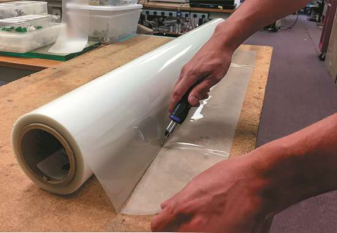
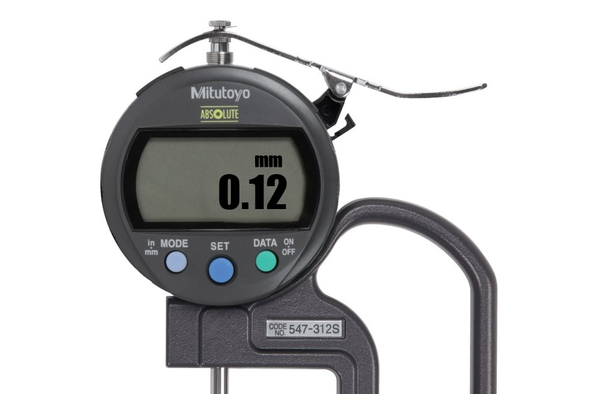
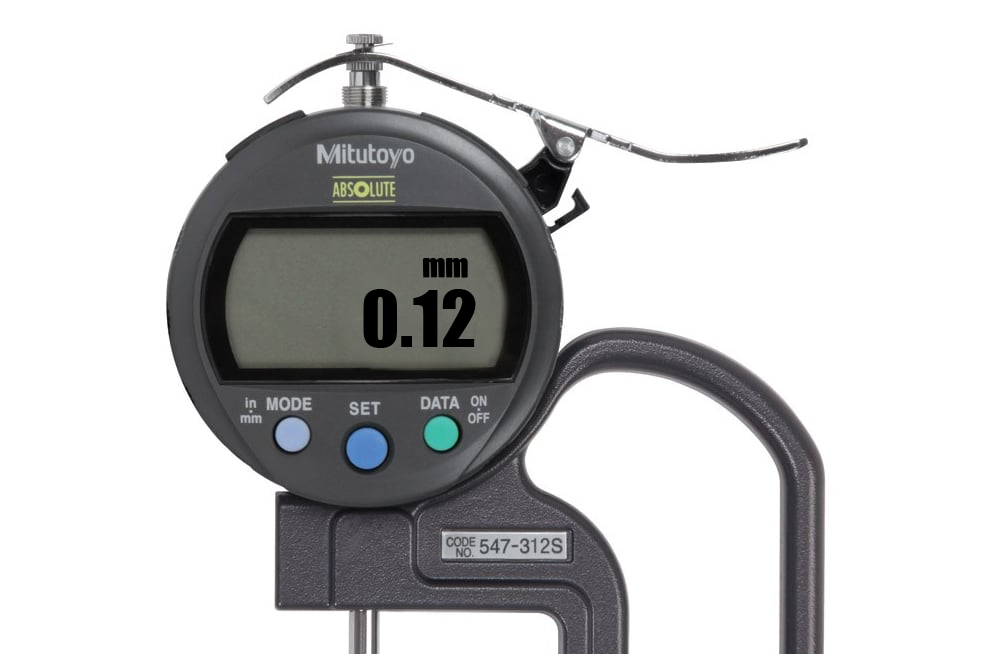
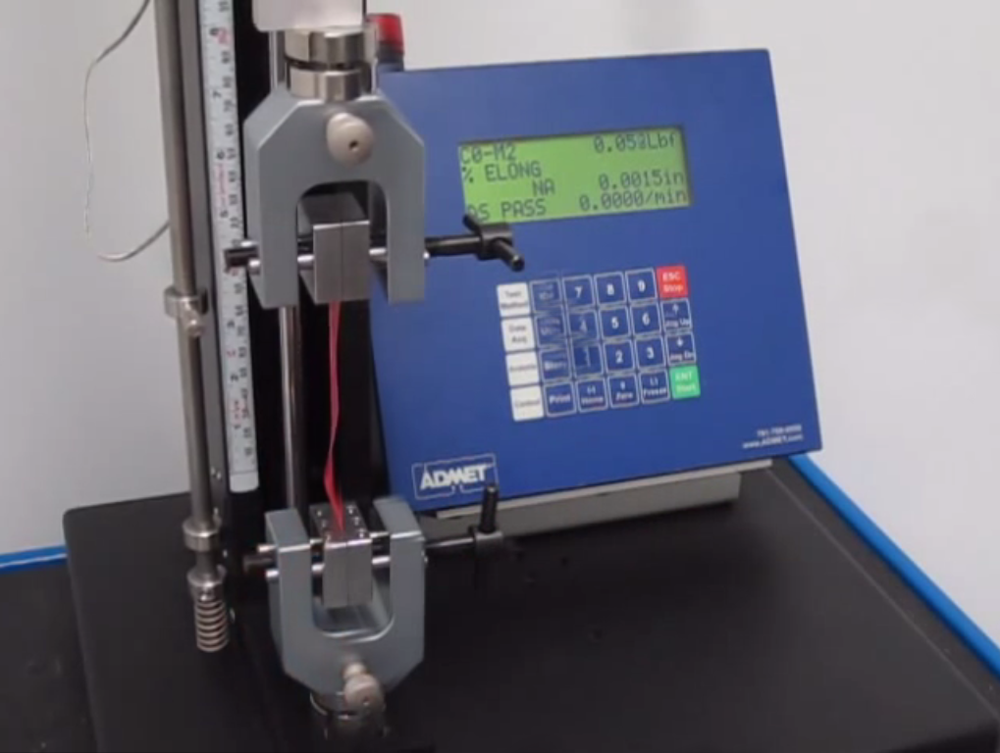
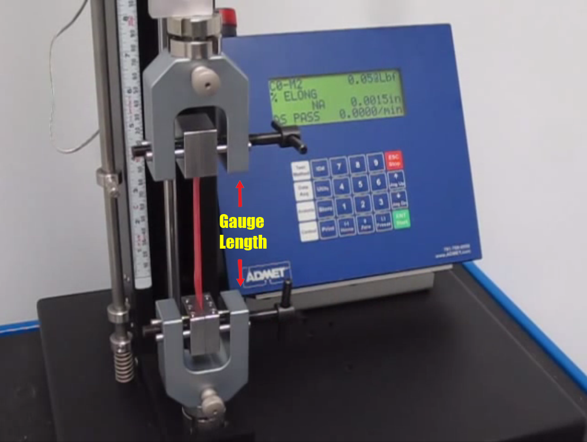

Determination of Tensile Strength and Elongation at break of film sample.
The tensile modulus of elasticity is an index of the stiffness of plastic films and can be used to compare the stiffness of different materials. The tensile energy to break (TEB) is the total energy absorbed per unit volume of the specimen up to the point of rupture and can be considered as a measure of toughness. Ultimate elongation values of several hundred percent are common for polymer films. The rate of strain, specimen parameters, and especially flaws may cause large variations in the results. In that sense, caution is advised in utilizing TEB test results for end-use design applications
The following formulae are used for calculation of tensile strength and % elongation:-
Tensile Strength ( Kgf/cm2 ) = W / ( b x t )
W = Load in Kgf.
B = Width in cm.
T = Thickness in cm
% Elongation = [ (L1 - L0)/ L0] x 100.
L0 = Initial length of film between the grips in cm.
L1 =Final length of film between the grips in cm.
The Tensile Strength of film sample is {{ts}} Kgf/cm2 and Elongation at break of film sample is {{per}} %
cut Rectangular sample of dimensions 2.54cm width and 15.24 cm length samples in length wise and cross wise direction of film.
With the help of thickness gauge the thickness is measured at various points and average thickness is considered.
 

---- mm
Samples are placed and fixed at upper jaws of tensile machine and movable jaws are moved up to fix the lower end of film
Initial length L0 of film between the jaws is measured with the help of Vernier calipers
-----
At the breaking of sample, the reading of load in Kgf noted and final length L1 between the jaws is measured
---
---